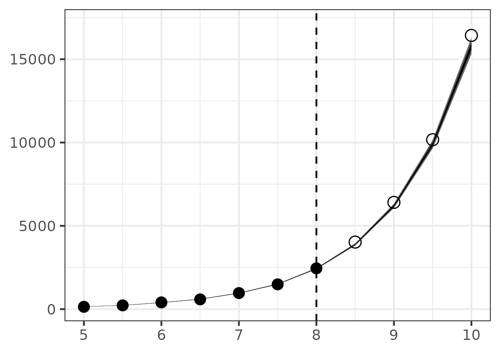

pypfilt-notes

Table of Contents
Examples
Simple birth-death
Consider an approximation of the birth-death process using \(\tau\)-leaping where the process is observed with Poisson noise about the true values of the state. The following example demonstrates how to simulate from this process and then run a forecast to estimate both the future state and the birth rate (assuming a known death rate).
Process model
We start by defining a model for this process
class ApproxBirthDeathProcess(pypfilt.model.Model): def field_types(self, ctx): return [('birth', np.dtype(float)), ('death', np.dtype(float)), ('x', np.dtype(int))] def update(self, ctx, time_step, is_fs, prev, curr): """Destructively update the current state.""" rnd = ctx.component['random']['model'] net_rate = (prev['birth'] - prev['death']) * time_step.dt * prev['x'] curr['birth'] = prev['birth'] curr['death'] = prev['death'] curr['x'] = prev['x'] + rnd.poisson(lam=net_rate, size=curr['x'].shape)
Note that in the update method we need to desctructively update
curr to contain the new value. I.e., curr should be considered a
reference to the state, this avoids needing to make a copy of this
data.
Observation model
As stated above, we will assume Poisson noise about the true value of
the state. This is implemented as the NoisyCount class.
class NoisyCount(pypfilt.obs.Univariate): def distribution(self, ctx, snapshot): expected_value = snapshot.state_vec['x'] return scipy.stats.poisson(mu=expected_value)
Scenario file
The simulation and estimation computations are specified with a TOML
file called my-scenario.toml:
[metadata] name = "Approximate birth-death example" author = "Alexander E. Zarebski" date = "2023-07-25" [components] model = "ApproxBirthDeathProcess.ApproxBirthDeathProcess" time = "pypfilt.Scalar" sampler = "pypfilt.sampler.LatinHypercube" summary = "pypfilt.summary.HDF5" [time] start = 0.0 until = 10.0 steps_per_unit = 10 summaries_per_unit = 2 [prior] death = { name = "constant", args.value = 1.0 } x = { name = "constant", args.value = 1 } [observations.x] model = "NoisyCount.NoisyCount" file = "demo-birth-death-x.ssv" [filter] particles = 10000 prng_seed = 42 history_window = -1 resample.threshold = 0.25 regularisation.enabled = true [scenario.simulate] prior.birth = { name = "constant", args.value = 2.0 } [scenario.forecast] summary.tables.model_cints.component = "pypfilt.summary.ModelCIs" summary.tables.model_cints.credible_intervals = [ 0, 50, 95 ] summary.tables.forecasts.component = "pypfilt.summary.PredictiveCIs" summary.tables.forecasts.credible_intervals = [10, 20, 40, 80] prior.birth = { name = "uniform", args.loc = 1.75, args.scale = 0.5 } backcast_time = 5.0 forecast_time = 8.0 [output] credible_intervals = "demo-cris.ssv"
Note, apart from scenario.simulate and scenario.forecast, all the
configuration is shared between the two tasks. The process for
referencing your model and observation objects needs to contain the
module and the class within it.
The specification of the prior distributions appears to take the location as the right end of the uniform distribution and the scale is the width of the uniform distribution.
Main script
Here is the main script that runs the simulation and estimation.
import numpy as np import pypfilt import pypfilt.plot import scipy.stats import matplotlib # ==================================================================== # Here we simulate a dataset scenario_file = 'my-scenario.toml' instances = list(pypfilt.load_instances(scenario_file)) sim_instance = instances[0] my_time_scale = sim_instance.time_scale() my_obs_tables = pypfilt.simulate_from_model(sim_instance) for (obs_unit, obs_table) in my_obs_tables.items(): out_file = f'demo-birth-death-{obs_unit}.ssv' pypfilt.io.write_table(out_file, obs_table, my_time_scale) # ==================================================================== # Here we forecast the future states of the system fst_instance = instances[1] backcast_time = fst_instance.settings['backcast_time'] forecast_time = fst_instance.settings['forecast_time'] context = fst_instance.build_context() results = pypfilt.forecast(context, [forecast_time], filename=None) # ==================================================================== # Here we export the credible intervals to an SSV fit = results.estimation.tables['forecasts'] forecast = results.forecasts[forecast_time].tables['forecasts'] credible_intervals = np.concatenate(( fit[fit['time'] >= backcast_time], forecast)) np.savetxt(fst_instance.settings['output']['credible_intervals'], credible_intervals, header = " ".join(credible_intervals.dtype.names), comments = '', fmt = ['%s'] + 5 * ['%.6e'])
Here are the results of the particle filter (with the code to create the figure below).

Figure 1: Forecast of birth-death process
library(ggplot2) library(RcppTOML) library(dplyr) scenario_toml <- "my-scenario.toml" scenario <- parseTOML(scenario_toml) cri_df <- scenario$output$credible_intervals |> read.table(header = TRUE) |> mutate(prob = 1 - prob) fs_time <- scenario$scenario$forecast$forecast_time bs_time <- scenario$scenario$forecast$backcast_time obs_df <- scenario$observations$x$file |> read.table(header = TRUE) |> filter(time >= bs_time) ggplot() + geom_ribbon( data = cri_df, mapping = aes(x = time, ymin = ymin, ymax = ymax, group = prob, fill = prob) ) + scale_fill_gradient(low = "white", high = "black") + geom_point( data = obs_df, mapping = aes(x = time, y = value, shape = time > fs_time), size = 3 ) + scale_shape_manual(values = c(16, 1)) + geom_vline(xintercept = fs_time, linetype = "dashed") + theme_bw() + theme(legend.position = "none", axis.title = element_blank()) ggsave(filename = "demo-forecast-plot.png", ## height = 14.8, width = 21.0, # A5 ## height = 10.5, width = 14.8, # A6 height = 7.4, width = 10.5, # A7 units = "cm")